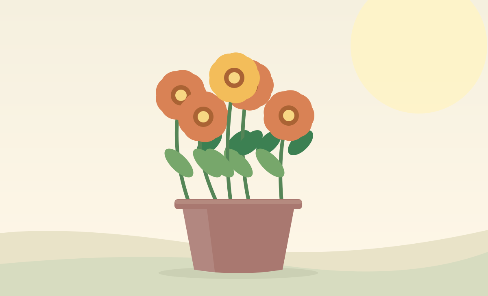

Marigolds
Bright gold and orange blooms that perform well in sunny, well-drained containers.
Green Balcony growing guide
A few containers of flowers can turn a railing or windowsill into a colorful corner. Choose plants for your actual sunlight and wind exposure.

Bright gold and orange blooms that perform well in sunny, well-drained containers.
Colorful trailing or mounded varieties, often used in hanging baskets and window boxes.
Choose dwarf types for pots; colorful blossoms can attract visiting pollinators.
A classic choice for bright balconies with well-drained pots and regular deadheading.
Clusters of small flowers that can soften the edges of a railing planter.
Consider suitable impatiens or begonias rather than sun-loving zinnias.
Pair a warm orange marigold with a white alyssum border, or combine purple petunias with soft pink geraniums. Use compatible sunlight and watering needs before planting different species together.